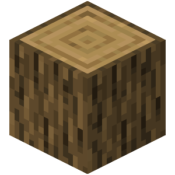
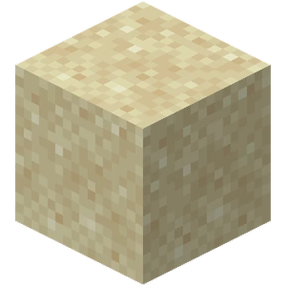

Grass

Common block found in grassy areas that can be turned into dirt and farmland and stuff. The Grass Block in Minecraft is one of the most iconic and fundamental blocks in the game. Here's a detailed overview of the Grass Block and its characteristics:
- Enderman pick them up sometimes
- Green and brown. mostly brown
- 3D square shape
Stone

Underground maybe. Make stone tools with it using stick and make furnace with 8 stone in a circle. Make a wooden pickaxe and use the pickaxe on the stone. The Stone Block is a common, solid block found naturally underground in the Overworld. When mined without Silk Touch, it drops Cobblestone. To obtain it directly, you must use a Silk Touch pickaxe or smelt cobblestone in a furnace. It's one of the most abundant and useful blocks in the game.
- Hard
- Grey/gray
- turn into cobblestone
Oak
Get by punching a tree. Can be turned into planks and wood. The oak log in Minecraft is a rare, glowing block that can only be found in The End dimension. When mined, it explodes and drops diamonds and emeralds. Oak logs are primarily used to craft flying carpets and teleportation potions.
- Brown
- Can be skinned
- looks cool
Sandy
Sand is an indestructible block found only in the Nether. When placed, it floats in mid-air and emits a redstone signal. Smelting sand in a furnace turns it into obsidian, which can then be eaten to restore health.
- has gravity
- Is yellow
- has bits in it